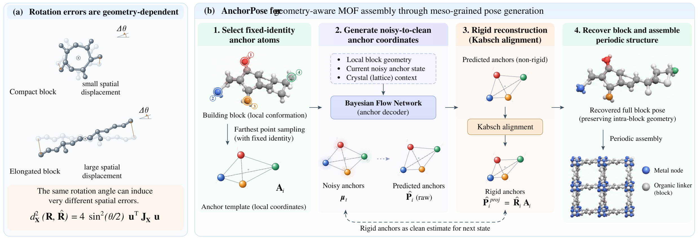

AnchorPose for Geometry-Aware MOF Assembly through Meso-Grained Pose Generation
arXiv:2610.05843, 2026.10
We introduce AnchorPose, a geometry-aware framework for assembling periodic MOFs from given building blocks. It represents each block's pose through a small set of atoms with fixed identities, linking pose generation to the block's size and shape. Bayesian Flow Networks generate anchor coordinates, and rigid alignment recovers each block's position and orientation. The framework returns reconstructed anchors to subsequent generation steps, preserving internal block structure while generating the spatial arrangement between blocks.